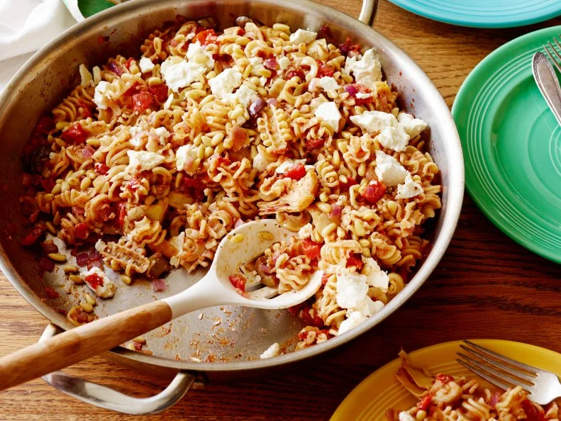

Pantry
the Odin Recipes

Description
Customize this recipe with whatever you have on hand in the pantry. Ree Drummond uses olives, jarred artichoke hearts, onions, garlic, tomatoes and jarred pesto to complete her dish.
Ingredients
- 1/2 whole red onion, diced
- 2 tablespoons olive oil
- One 14.5-ounce can diced tomatoes with juice
- 1/3 cup chicken stock or white wine
- 1 whole jar artichoke hearts, halved
- 2 cloves garlic, minced
- Salt and freshly ground black pepper
- 8 ounces pasta, cooked al dente and drained
- 2 to 3 tablespoons jarred pesto
- 1/2 cup fork-chunked feta
- 3 tablespoons dry-toasted pine nuts
Steps
- Add the onions into a skillet with the olive oil over medium heat. Saute for a few minutes, and then add in the diced tomatoes, chicken stock, olives, artichoke hearts and garlic. Season with a pinch of salt and pepper. Stir and simmer over low heat for 15 minutes, stirring occasionally.
- Add the cooked pasta to the skillet and stir to combine with the sauce. Mix in the pesto. Toss in the feta and top with the pine nuts.